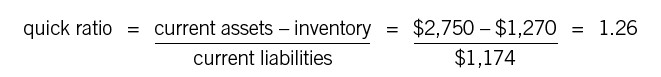

Liquidity Ratios
Can We Pay Our Bills?
Liquidity ratios tell you about a company’s ability to meet all its financial obligations—not just debt but payroll, payments to vendors, taxes, and so on. These ratios are particularly important to small businesses—the ones that are in most danger of running out of cash—but they become important whenever a larger company encounters financial trouble as well. Not to harp on the airlines too much, but several of the larger carriers have been through bankruptcy in recent years. You can bet that professional investors and bondholders have been carefully watching their liquidity ratios ever since.
Again, we’ll limit ourselves to two of the most common ratios.
CURRENT RATIO
The current ratio measures a company’s current assets against its current liabilities. Remember from the balance sheet chapters (part 3) that current in accountantese generally means a period of less than a year. So current assets are those that can be converted into cash in less than a year; the figure normally includes accounts receivable and inventory as well as cash. Current liabilities are those that will have to be paid off in less than a year, mostly accounts payable and short-term loans.
The formula and sample calculation for the current ratio are as follows:
This is another ratio that can be both too low and too high. In most industries, a current ratio is too low when it is getting close to 1. At that point, you are just barely able to cover the liabilities that will come due with the cash you’ll have coming in. Most bankers aren’t going to lend money to a company with a current ratio anywhere near 1. Less than 1, of course, is way too low, regardless of how much cash you have in the bank. With a current ratio of less than 1, you know you’re going to run short of cash sometime during the next year unless you can find a way of generating more cash or attracting more from investors.
A current ratio is too high when it suggests that the company is sitting on its cash rather than investing it or returning it to shareholders. By early 2012, for example, Apple had amassed a cash hoard of nearly $100 billion (yes, billion). To the delight of most investors, the company announced in March of that year that it would begin paying shareholders dividends for the first time in many years. Google, at this writing, has a ton of cash in the bank as well. The current ratio at both companies has shot through the ceiling.
QUICK RATIO
The quick ratio is also known as the acid test, which gives you an idea of its importance. Here are the formula and calculation:

Notice that the quick ratio is the current ratio with inventory removed from the calculation. What’s the significance of subtracting inventory? Nearly everything else in the current assets category is cash or is easily transformed into cash. Most receivables, for example, will be paid in a month or two, so they’re almost as good as cash. The quick ratio shows how easy it would be for a company to pay off its short-term debt without waiting to sell off inventory or convert it into product. Any business that has a lot of cash tied up in inventory has to know that lenders and vendors will be looking at its quick ratio—and will be expecting it (in most cases) to be significantly above 1.